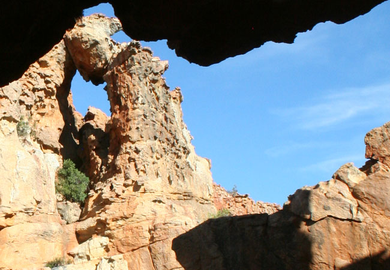
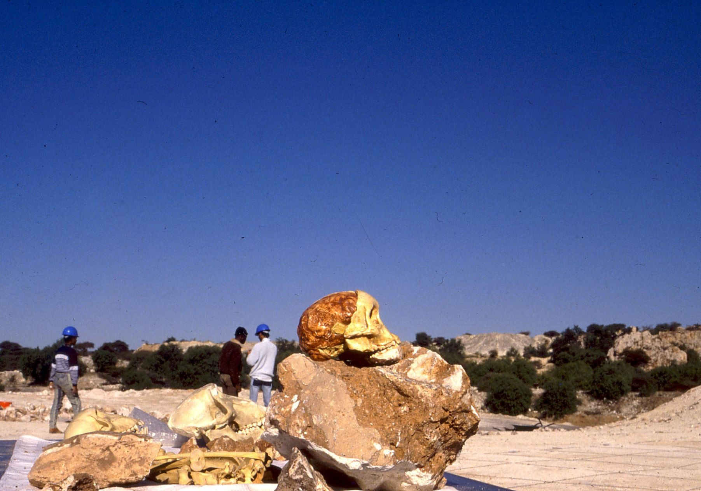
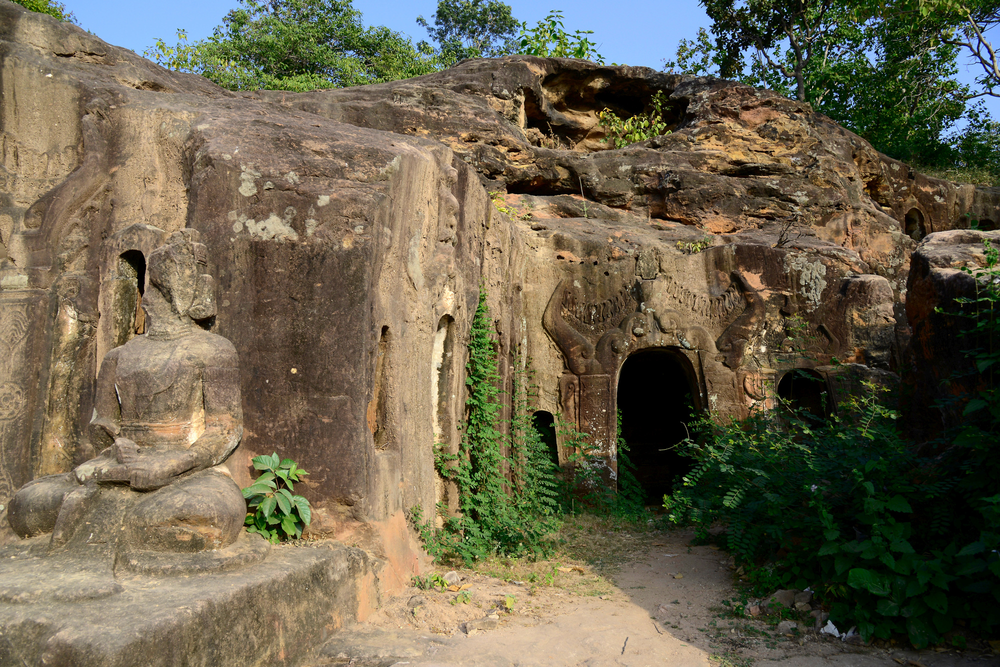

Taung Heritage Site
38 Reviews
Location: Taung, North West Province, South Africa




Historic Anthropological Site
The Taung Heritage Site is famous for the discovery of the Taung Child skull in 1924 by Professor Raymond Dart, one of the most significant anthropological finds in history.
Entry Fees
Adults - R50 / entry
Children - R30 / entry
- Skull Discovery Site Visit the exact location where the Taung Child skull was discovered, changing the course of human evolution studies.
- Nature Walks Enjoy scenic hiking trails and tranquil surroundings among limestone cliffs and indigenous vegetation.
- Educational Experience Learn about early hominids and the scientific impact of the Taung Child through informative displays.
- Photogenic Landscape Capture great views of the natural terrain and historical landmarks perfect for photography.
Taung Heritage Site is a culturally and scientifically important location in South Africa where the fossilized skull of a young Australopithecus africanus, known as the Taung Child, was found. This discovery provided critical evidence that early human ancestors originated in Africa. The site includes educational trails, a monument, and caves that offer visitors both reflection and adventure.
Add your comment here
Comments
Sakhile Shabalala
Its's great!